Unified survival machine learning and interpretability in R.
survalis provides a unified framework for survival machine learning in R. Seven verbs cover the whole workflow for 22 built-in learners and for any learner you write yourself: fitting, prediction, resampled and external evaluation, tuning, paired comparison, model-agnostic interpretation, and causal contrasts. Discrimination, calibration and Brier metrics sit next to decision-weighted scores (dwscore()), which average the loss of a risk-threshold decision rule over a stated range of thresholds.
survalis is available on CRAN: https://CRAN.R-project.org/package=survalis.
The seven-verb interface
library(survalis)
f <- Surv(time, status) ~ age + karno + celltype
m <- fit(f, veteran, model = "ranger", spec = list(num.trees = 500))
predict(m, veteran[1:5, ], times = c(90, 180, 365)) # survival matrix
evaluate(m, times = c(90, 180, 365), resampling = cv(5)) # resampled metrics
cmp <- compare(f, veteran, models = c("coxph", "ranger", "densemlp"),
times = c(90, 180, 365))
plot(cmp)
plot(interpret(m, "shap", newdata = veteran[1, ], times = 180))
estimate(f, veteran, model = "ranger", treatment = "trt", tau = 365)fit(), predict(), evaluate(), tune(), compare(), interpret() and estimate() are the whole interface. Resampling is described by cv(), holdout(), groupcv() and bootstrap(), dwscore() scores a survival matrix directly, and listlearners(), listmetrics() and listmethods() give the valid ids. Upgrading from 1.x? See vignette("from-1.0", package = "survalis").
Installation
# Install the released version from CRAN
install.packages("survalis")
# Or install the development version from GitHub
remotes::install_github("ielbadisy/survalis")Core philosophy
- Seven verbs cover the whole workflow:
fit(),predict(),evaluate(),tune(),compare(),interpret(),estimate() - One function per job: learners are chosen by
model, metrics bymetrics, explanations bymethod, outputs bytype - Every verb returns an S3 object with
print(),summary(),plot()andas.data.frame()methods - Matrix predictions are survival matrices: one row per subject, columns
t=100,t=200, …, with the grid recorded inattr(x, "times") - A custom learner is two functions,
list(fit = , predict = ), and works with every verb
Exploring the package
library(survalis)
listlearners() # ids for `model`
#> learner tunable
#> 1 coxph FALSE
#> 2 aalen FALSE
#> 3 glmnet TRUE
#> 4 selectcox TRUE
#> 5 aftgee FALSE
#> 6 flexsurvreg TRUE
#> 7 bnnsurv TRUE
#> 8 rpart TRUE
#> 9 bart TRUE
#> 10 xgboost TRUE
#> 11 coxboost TRUE
#> 12 fastgbm FALSE
#> 13 ranger TRUE
#> 14 rsf TRUE
#> 15 cforest TRUE
#> 16 blackboost TRUE
#> 17 survsvm TRUE
#> 18 densemlp FALSE
#> 19 orsf TRUE
#> 20 rpsurv FALSE
#> 21 nbsurv FALSE
#> 22 survmetalearner FALSE
listmetrics() # ids for `metrics`
#> metric direction
#> 1 cindex maximize
#> 2 auc maximize
#> 3 brier minimize
#> 4 ibs minimize
#> 5 iae minimize
#> 6 ise minimize
#> 7 ece minimize
#> 8 survacc maximize
#> 9 range:<lower>-<upper> minimize
#> summary
#> 1 Harrell-style concordance index for survival predictions.
#> 2 Cumulative/dynamic time-dependent AUC at a selected evaluation time.
#> 3 Brier Score at specified evaluation time(s) (IPCW-weighted when needed).
#> 4 Integrated Brier Score over an evaluation time grid (IPCW-weighted).
#> 5 Integrated absolute error against the Kaplan-Meier curve.
#> 6 Integrated squared error against the Kaplan-Meier curve.
#> 7 Expected calibration error at a single evaluation time.
#> 8 SurvAcc: spherical decision-weighted score at a single time (IPCW), see dwscore().
#> 9 Decision-weighted loss over a risk-threshold range, e.g. "range:0.05-0.20", at a single time, see dwscore().
#> range
#> 1 [0, 1] (higher is better)
#> 2 [0, 1] (higher is better)
#> 3 [0, 1] (lower is better)
#> 4 [0, 1] (lower is better)
#> 5 [0, Inf) (lower is better)
#> 6 [0, Inf) (lower is better)
#> 7 [0, 1] (lower is better)
#> 8 [0, 1] (higher is better)
#> 9 [0, 1] (lower is better)
listmethods() # ids for `method` in interpret()
#> method
#> 1 pdp
#> 2 ice
#> 3 ale
#> 4 shap
#> 5 shap_matrix
#> 6 varimp
#> 7 permute
#> 8 interaction
#> 9 counterfactual
#> 10 surrogate
#> 11 tree_surrogate
#> 12 calibration
#> 13 roc
#> 14 dca
#> 15 survcluster
#> summary
#> 1 Partial dependence of predicted survival on one feature, over time.
#> 2 Individual conditional expectation curves for one feature.
#> 3 Accumulated local effects for one feature.
#> 4 Shapley values for one instance, aggregated over time.
#> 5 Shapley values for many instances (beeswarm plot).
#> 6 Permutation variable importance on the survival scale.
#> 7 Alias of varimp.
#> 8 Friedman H-statistic interaction strength per feature.
#> 9 Smallest feature changes that move predicted survival at a target time.
#> 10 Local linear surrogate for one instance at a target time.
#> 11 Global decision-tree surrogate of the predictions.
#> 12 Calibration curve at one time.
#> 13 Time-dependent ROC curve at one time.
#> 14 Decision curve (net benefit over risk thresholds) at one time.
#> 15 Clusters of subjects with similar predicted survival curves.Basic Workflow
1. Fit a model
mod_cox <- fit(Surv(time, status) ~ age + karno + celltype, veteran, model = "coxph")
mod_cox
#> <survalis_fit> model = coxph (engine: survival)
#> formula: Surv(time, status) ~ age + karno + celltype
#> data: 137 obs, 128 events (93%)2. Predict survival probabilities
pred <- predict(mod_cox, newdata = veteran[1:5, ], times = c(100, 200))
pred
#> <survmat> survival | 5 obs x 2 times [100, 200]
#> t=100 t=200
#> [1,] 0.6142681 0.3541697
#> [2,] 0.6944383 0.4599242
#> [3,] 0.5556797 0.2860796
#> [4,] 0.6033305 0.3408724
#> [5,] 0.6959633 0.4620783predict() also returns other quantities via type: "risk" (1 - S(t)), "chf", "hazard", "rmst", "quantile", "median".
3. Evaluate model performance
ev <- evaluate(mod_cox, times = c(80, 160), resampling = cv(5, seed = 123))
ev
#> <survalis_eval> model = coxph
#> <survalis_resampling> 5-fold CV, strata = status, seed = 123
#> grid: 2 times in [80, 160]
#> cindex 0.7197 (sd 0.0532, 95% [0.6731, 0.7663], n = 5)
#> ibs 0.1737 (sd 0.0379, 95% [0.1405, 0.2070], n = 5)
summary(ev)
#> metric mean sd n se lower upper
#> 1 cindex 0.7196779 0.05315293 5 0.02377071 0.6730873 0.7662685
#> 2 ibs 0.1737430 0.03790019 5 0.01694948 0.1405220 0.2069639Metrics are chosen by metrics. Next to "cindex", "auc", "brier", "ibs" and the calibration errors, the decision-weighted scores "survacc" and "range:<lower>-<upper>" are available at a single time.
To score a model on data it was not trained on, pass newdata; to score predictions made elsewhere, pass the survival matrix and the outcome.
train <- veteran[1:100, ]
test <- veteran[-(1:100), ]
m_tr <- fit(Surv(time, status) ~ age + karno + celltype, train, model = "coxph")
evaluate(m_tr, newdata = test, times = c(80, 160))
#> <survalis_eval> model = coxph
#> scored once on 37 subjects (no resampling)
#> grid: 2 times in [80, 160]
#> cindex 0.7485
#> ibs 0.1424
S <- predict(m_tr, test, times = c(80, 160))
evaluate(S, y = Surv(test$time, test$status))
#> <survalis_eval> model = supplied predictions
#> scored once on 37 subjects (no resampling)
#> grid: 2 times in [80, 160]
#> cindex 0.7485
#> ibs 0.1424
evaluate(m_tr, newdata = test, times = 160,
metrics = c("brier", "survacc", "range:0.05-0.20"))
#> <survalis_eval> model = coxph
#> scored once on 37 subjects (no resampling)
#> grid: 1 times in [160, 160]
#> brier 0.0806
#> survacc 0.9115
#> range:0.05-0.20 0.0183dwscore() gives the decision-weighted loss itself: the IPCW loss of the rule “act if predicted risk exceeds c”, averaged over thresholds c with a chosen weight ("range", "survacc", "brier", "log" or "beta"). Each score is a weighted area under the net benefit curve.
y <- Surv(test$time, test$status)
dwscore(S, y, weight = "range", thresholds = c(0.05, 0.20))
#> time weight loss
#> 1 80 range(0.05,0.2) 0.04391892
#> 2 160 range(0.05,0.2) 0.01829955
dwscore(S, y, weight = "survacc")
#> time weight loss
#> 1 80 survacc 0.15888225
#> 2 160 survacc 0.088524274. Compare multiple learners
compare() evaluates every learner on the same resampling folds, so results are paired; tune = TRUE tunes each tunable learner first.
cmp <- compare(
Surv(time, status) ~ age + karno + celltype,
data = veteran,
models = c("coxph", "rpart", "ranger"),
times = c(80, 160),
resampling = cv(3, seed = 1)
)
cmp
#> <survalis_compare> 3 models
#> <survalis_resampling> 3-fold CV, strata = status, seed = 1
#>
#> cindex (higher is better):
#> * coxph 0.7317 (se 0.0199)
#> ranger 0.6898 (se 0.0284)
#> rpart 0.6634 (se 0.0411)
#>
#> ibs (lower is better):
#> * coxph 0.1713 (se 0.0012)
#> ranger 0.1914 (se 0.0026)
#> rpart 0.2085 (se 0.0099)
plot(cmp)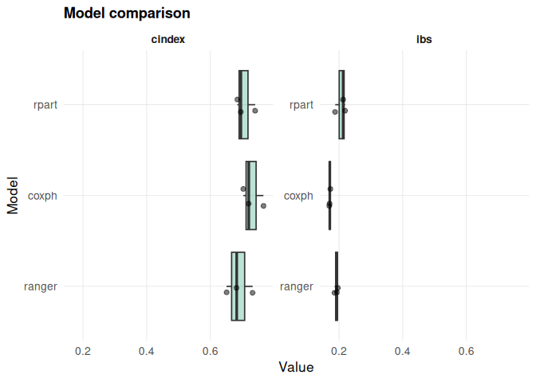
5. Tune a learner
tune() scores a grid of configurations on shared folds and refits the best one. Learners with tunable = TRUE have a default grid; any learner, custom ones included, can be tuned over a grid you supply.
tuned <- tune(
Surv(time, status) ~ age + karno + celltype, veteran, model = "rpart",
grid = expand.grid(cp = c(0.001, 0.01, 0.05), minsplit = c(10, 20), maxdepth = 5),
times = c(80, 160), resampling = cv(3, seed = 1), metric = "ibs"
)
tuned
#> <survalis_tune> model = rpart | optimise ibs over 6 configs
#> <survalis_resampling> 3-fold CV, strata = status, seed = 1
#> best: minsplit = 10, cp = 0.05, maxdepth = 5
#> ibs at best: 0.1758
predict(tuned, veteran[1:3, ], times = c(80, 160))
#> <survmat> survival | 3 obs x 2 times [80, 160]
#> t=80 t=160
#> [1,] 0.8010013 0.5484333
#> [2,] 0.8010013 0.5484333
#> [3,] 0.8010013 0.54843336. Bring your own learner
A custom learner is a list with a fit function and a predict function that returns one row per subject and one column per time. It then works with every verb.
expo <- list(
name = "exponential",
fit = function(formula, data, ...) survival::survreg(formula, data, dist = "exponential"),
predict = function(object, newdata, times) {
rate <- 1 / predict(object, newdata, type = "response")
exp(-outer(rate, times))
}
)
compare(Surv(time, status) ~ age + karno + celltype, veteran,
models = list("coxph", expo), times = c(80, 160),
resampling = cv(3, seed = 1))
#> <survalis_compare> 2 models
#> <survalis_resampling> 3-fold CV, strata = status, seed = 1
#>
#> cindex (higher is better):
#> * exponential 0.7339 (se 0.0208)
#> coxph 0.7317 (se 0.0199)
#>
#> ibs (lower is better):
#> * exponential 0.1712 (se 0.0031)
#> coxph 0.1713 (se 0.0012)7. Visualize interpretation
interpret() is the single entry point to every explanation method, and plot() draws its result.
shap_meanabs <- interpret(
mod_cox, "shap",
newdata = veteran[100, ],
times = 80,
sample.size = 50,
aggregate = TRUE,
shap_method = "meanabs"
)
as.data.frame(shap_meanabs)
#> feature phi
#> age age 0.01389376
#> karno karno 0.25916597
#> celltype celltype 0.05208896
plot(shap_meanabs)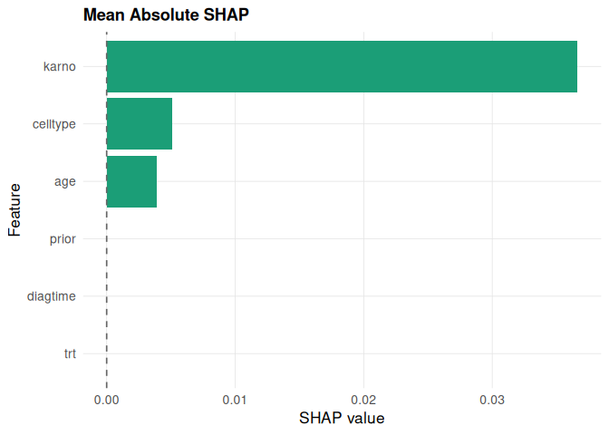
More interpretability methods
survalis also provides PDP, ALE, surrogate explanations, tree surrogates, permutation importance, interaction analysis, counterfactuals, and clustering of individualized survival curves, all through interpret(fit, method = ..., ...).
Partial dependence and ICE
pdp_age <- interpret(mod_cox, "pdp", feature = "age", times = c(100, 200, 300))
plot(pdp_age, which = "per_time")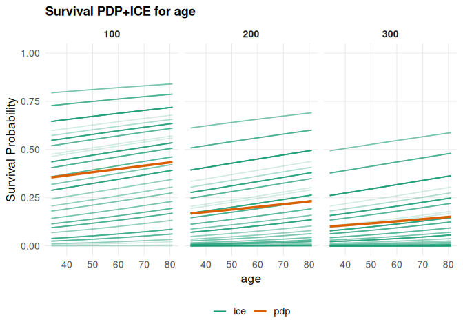
plot(pdp_age, which = "integrated", smooth = TRUE)
#> `geom_smooth()` using formula = 'y ~ x'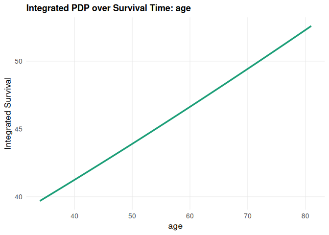
Accumulated local effects
ale_karno <- interpret(mod_cox, "ale", feature = "karno", times = c(100, 200, 300))
#> Warning in rowsum(diffs, factor(bin, levels = seq_len(K)))/pmax(nk, 1L): longer
#> object length is not a multiple of shorter object length
#> Warning in matrix(apply(local, 2L, cumsum), nrow = K, ncol = n_times): data
#> length [27] is not a sub-multiple or multiple of the number of rows [11]
plot(ale_karno, which = "per_time")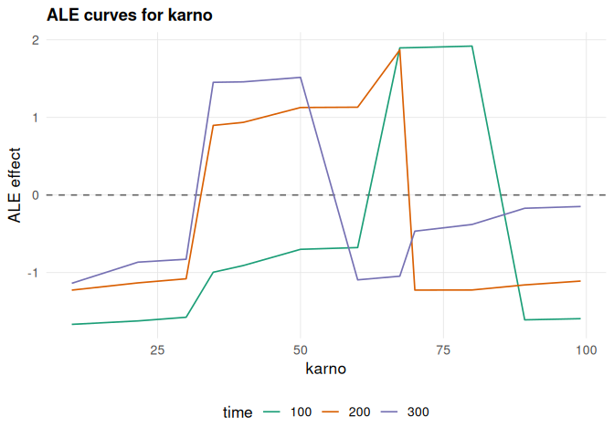
plot(ale_karno, which = "integrated", smooth = TRUE)
#> `geom_smooth()` using formula = 'y ~ x'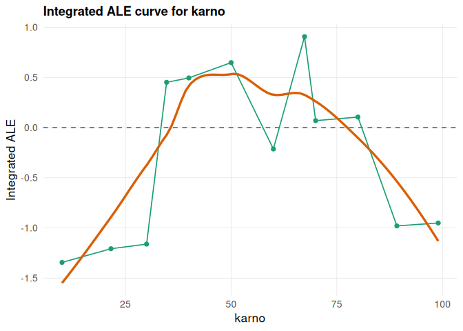
Local surrogate explanation
local_surrogate <- interpret(
mod_cox, "surrogate",
newdata = veteran[1, , drop = FALSE],
times = c(100, 200, 300),
target_time = 200,
k = 5
)
#> Warning in (function (model, newdata, baseline_data, times, target_time, :
#> Selected fewer variables than requested k.
as.data.frame(local_surrogate)
#> feature feature_value effect target_time
#> 1 karno 60 0.5605597 200
#> 2 celltype squamous 0.1955526 200
#> 3 age 69 0.1184320 200
plot(local_surrogate, top_n = 10)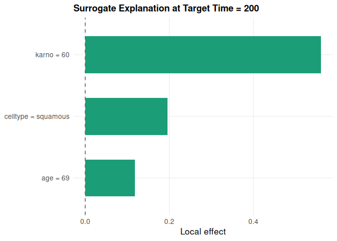
Tree surrogate
tree_surrogate <- interpret(mod_cox, "tree_surrogate", times = c(100, 200, 300))
plot(tree_surrogate, type = "importance", top_n = 5)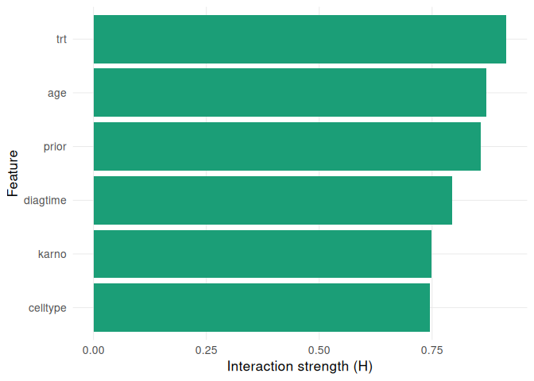
# plot(tree_surrogate, type = "tree")Permutation variable importance
varimp_res <- interpret(
mod_cox, "varimp",
times = c(100, 200, 300),
metric = "ibs",
n_repetitions = 5,
seed = 123
)
as.data.frame(varimp_res)
#> feature importance importance_05 importance_95 scaled_importance
#> 1 karno 0.0626237800 0.054011871 0.0698607609 100.000000
#> 2 celltype 0.0417312411 0.033900675 0.0487391810 66.638011
#> 3 age -0.0009593704 -0.001832599 0.0004581782 -1.531959
plot(varimp_res)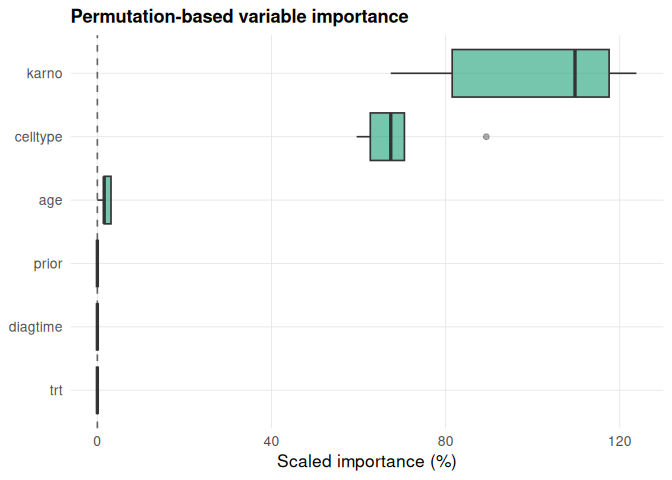
Feature interactions
interaction_1way <- interpret(mod_cox, "interaction", times = c(100, 200, 300),
target_time = 200, type = "1way")
interaction_heatmap <- interpret(mod_cox, "interaction", times = c(100, 200, 300),
target_time = 200, type = "heatmap")
interaction_time <- interpret(mod_cox, "interaction", times = c(100, 200, 300),
type = "time")
plot(interaction_1way, type = "1way")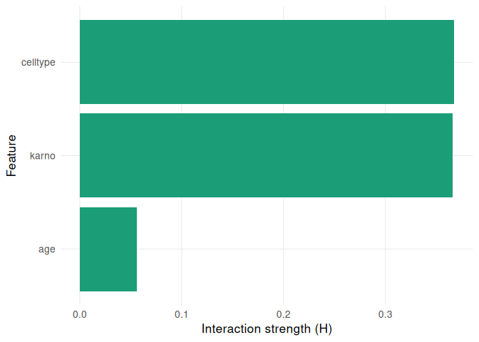
plot(interaction_heatmap, type = "heatmap")
plot(interaction_time, type = "time")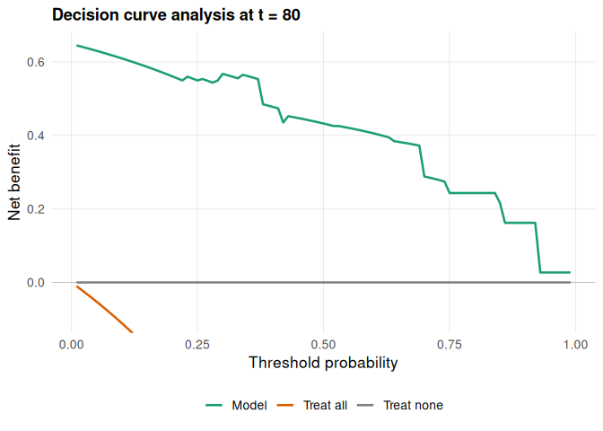
Counterfactual explanations
counterfactuals <- interpret(
mod_cox, "counterfactual",
newdata = veteran[1, , drop = FALSE],
times = c(100, 200, 300),
target_time = 200,
features_to_change = c("age", "karno", "diagtime"),
cost_penalty = 0.01
)
as.data.frame(counterfactuals)
#> feature original_value suggested_value survival_gain change_cost
#> 1 age 69 69.1313 0.0003 0.1313
#> 2 karno 60 81.0202 0.2347 21.0202
#> penalized_gain
#> 1 -0.0010
#> 2 0.0245Clusters of survival curves
clusters <- interpret(mod_cox, "survcluster", times = seq(10, 400, by = 30),
K = 3, seed = 1)
plot(clusters)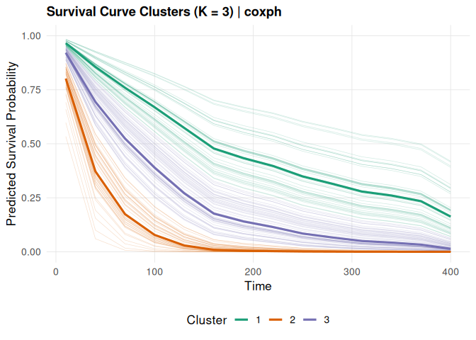
8. Calibration, ROC and decision curves
The decision curve uses the same censoring weights as dwscore(), so each "range:<lower>-<upper>" loss equals the weighted area between the treat-all and model curves.
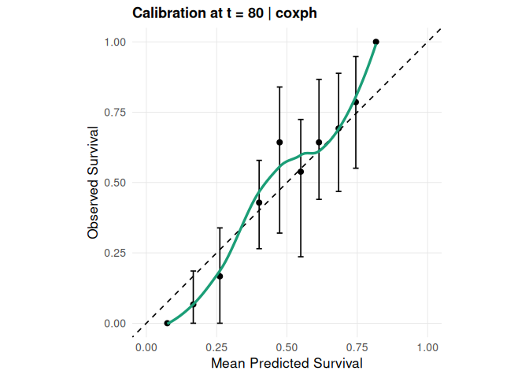
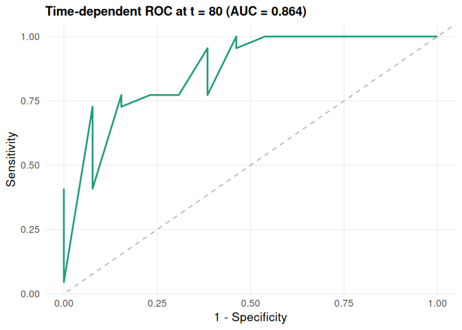
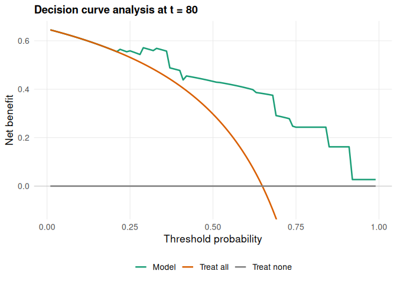
9. Causal contrasts
estimate() gives a plug-in G-formula contrast (RMST or survival, difference or ratio) with bootstrap intervals. See vignette("causal-estimation", package = "survalis").
estimate(Surv(time, status) ~ age + karno + celltype, veteran, model = "coxph",
treatment = "trt", tau = 365, R = 50, seed = 1)
#> <survalis_estimate> RMST difference at tau = 365 (model: coxph)
#> treatment: trt (2 vs 1)
#> estimate: -14.8805 95% CI [-46.7194, 11.2846] (50 bootstrap, refit)
#> plug-in G-formula; causal reading needs exchangeability, positivity,
#> consistency, no interference and a correct outcome model.Citation
citation("survalis")
#> To cite survalis in publications, use:
#>
#> El Badisy I (2026). _survalis: Interpretable Survival Machine
#> Learning Framework_. R package version 2.3.0,
#> <https://CRAN.R-project.org/package=survalis>.
#>
#> A BibTeX entry for LaTeX users is
#>
#> @Manual{,
#> title = {survalis: Interpretable Survival Machine Learning Framework},
#> author = {Imad {El Badisy}},
#> year = {2026},
#> note = {R package version 2.3.0},
#> url = {https://CRAN.R-project.org/package=survalis},
#> }